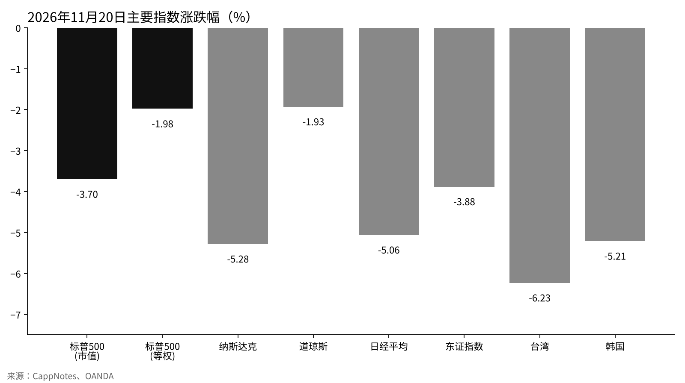
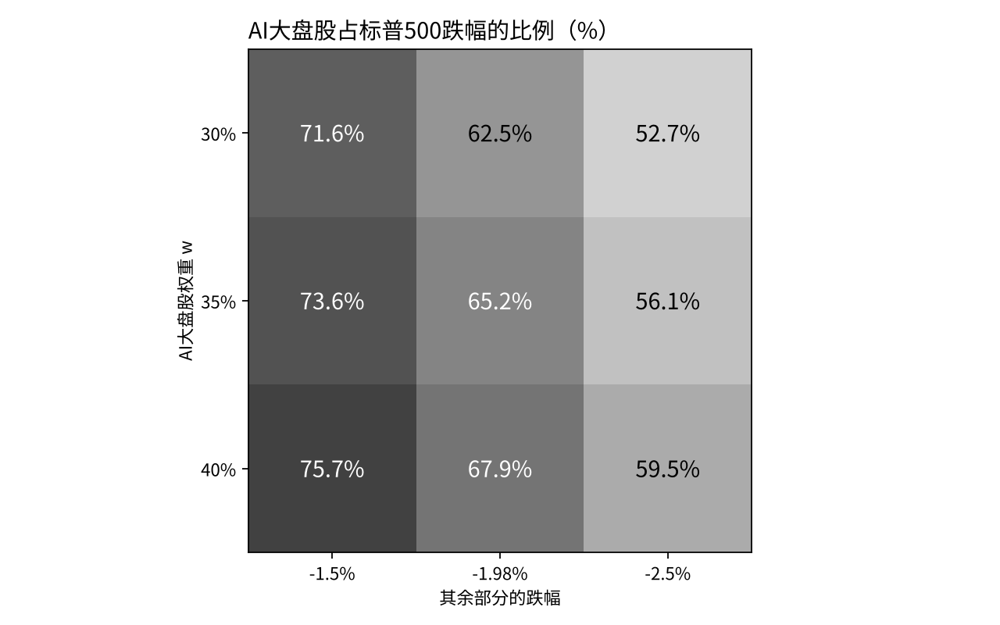

2026年11月AI股暴跌的导火索是什么？——以英伟达CEO辞职与信息披露调查、Anthropic上市和加息预期来检验
2026年11月20日，标普500指数下跌3.70%，连跌7天，全周下跌8.6%，为2025年4月以来最大周跌幅。同一天，日经平均指数下跌3,007点（5.06%），台湾股市全周下跌17.5%[8]。
下跌的核心是以英伟达为首的AI大盘股。但导火索不止一个。
本文的问题是：这次暴跌中有几成来自对AI大盘股的集中，又是什么打破了这种集中？

- 比较按市值加权的标普500（−3.70%）与等权重指数（−1.98%）的差距可以推算，53%至76%的跌幅来自AI大盘股。
- 三个导火索叠加在一起：英伟达CEO辞职（11月12日）与关于信息披露调查的报道（17日）、史上最大的813亿美元Anthropic上市（19日），以及12月加息概率超过九成。
- 在日本，融资买入的估值损益率已恶化至约−21%，被迫抛售可能加深了跌势。导火索来自美国，但下跌的深度由杠杆决定。
问题与背景
股指暴跌分为两种。一种是整个市场同时被抛售；另一种是少数大型股票被抛售，拖累指数下跌。前者通常反映经济或金融问题，后者反映集中的问题。
本文所说的"集中"，是指指数的涨跌在很大程度上取决于少数市值巨大的公司。标普500按市值加权，公司越大，对指数的影响越大。
"等权重指数"是假设对同样的500只股票以相同比重持有而计算的指数，由标普道琼斯指数公司发布[3]。比较两个指数的差距，就能看出是大公司还是小公司跌得更多。
"融资估值损益率"表示用借来的钱买入、尚未了结的股票所承受的浮动盈亏比例。当它恶化到−20%左右时，被要求追加保证金而被迫卖出的人会增多，这一水平一直被视为底部的参考[11]。
2026年11月，AI相关大盘股从月初起就遭到抛售。11月3日美国中期选举后，AI与半导体股下跌；11月12日，英伟达CEO黄仁勋辞职[9]。8天后，美国、日本、台湾和韩国同时暴跌。
同一周，Anthropic在纳斯达克上市，募资约813亿美元，为美国史上最大IPO[8]。大型上市会从市场中抽走资金，因为投资者要卖出其他股票来认购。上市第二天的11月20日，Anthropic本身也下跌8.50%，收于88.91美元[8]。
数据与方法
使用的数据包括11月20日各指数的涨跌幅、美国10年期国债收益率、VIX（美股预期波动率）以及日本融资交易的估值损益率。指数涨跌来自CappNotes的汇总[8]，利率与VIX来自FRED[1][2]，融资数据来自日本交易所集团[7]和券商的公布值[11][12]。
集中的贡献按以下方法推算：把标普500的−3.70%分为AI大盘股组（权重w）和其余部分（权重1−w），并假设其余部分的跌幅接近等权重指数（−1.98%）。
公式为"AI大盘股的贡献＝−3.70%−（1−w）×（其余部分的跌幅）"。w和其余部分的跌幅均无公布值，因此把w设为30%、35%、40%，把其余部分设为−1.5%、−1.98%、−2.5%，观察敏感度。
导火索的识别依靠日期排序：把各事件的公布日与随后的走势按顺序排列，确认哪些事件发生在下跌之前。这只是确认顺序，并非证明因果。
VIX是根据标普500期权价格计算的、对未来30天波动幅度的预期[2]。数值越大，说明投资者越担心大幅波动。11月20日收于35.89，为3月下旬以来最高[8]。
结果
下图汇总了11月20日主要指数的涨跌。跌幅较大的是纳斯达克综合指数（−5.28%）、台湾（−6.23%）、韩国（−5.21%）和日经平均（−5.06%）[8]，都是AI与半导体比重较高的市场。

相比之下，等权重标普500下跌1.98%，道琼斯指数下跌1.93%[3][8]。上涨的行业只有必需消费品，但跌幅的深浅主要取决于公司规模，而非行业。
下表按日期排列各事件。
| 日期 | 事件 | 出处 |
|---|---|---|
| 11月3日 | 美国中期选举，次日起AI与半导体股遭抛售 | [8] |
| 11月12日 | 英伟达CEO黄仁勋辞职，CFO克雷斯出任临时CEO | [4][9] |
| 11月13日 | 报道称农林中央金库开始投资半导体股ETF | [10] |
| 11月17日 | 报道称SEC正在调查英伟达的信息披露 | [8] |
| 11月19日 | 英伟达财报（营收1,158亿美元）与Anthropic上市（募资约813亿美元） | [4][8] |
| 11月19日 | 美国10年期国债收益率一度升至5.10%以上 | [1] |
| 11月20日 | 标普500 −3.70%，日经平均 −5.06%，VIX 35.89 | [2][8] |
财报数字很强。即便如此，英伟达在11月20日仍下跌14.01%[8]。可以理解为，这次下跌考验的不是数字，而是对管理层更替和信息披露的信任。
下跌蔓延到美国以外。台湾加权指数全周下跌17.5%，彭博称这是1991年以来最差的一周[8]。半导体工厂和零部件企业越多的市场，越与英伟达的股价同向波动。
在东京，日经平均开盘即下跌超过800点，跌破11月6日的近期低点并以最低价收盘。主板成交额膨胀至约540亿美元，电气设备和有色金属大跌，保险和航空则上涨[13]。
敏感度分析
本文推算了AI大盘股组占标普500跌幅的比例。下图显示w与其余部分跌幅的各种组合下的比例。

在全部9种情况下，AI大盘股的贡献都超过一半。在中间假设（w＝35%、其余−1.98%）下约为65%，意味着AI大盘股一天下跌约6.9%。
单看英伟达，若其在指数中的权重为6%至8%，−14.01%的跌幅使标普500下跌0.84至1.12个点，一家公司就能解释指数跌幅的约23%至30%。
讨论
也有相反的看法：下跌的主因不是集中而是利率。据报道，12月9日FOMC会议加息的概率超过九成，而利率上升会压低成长股的估值[6]。
但11月20日美国10年期国债收益率下降12个基点至4.92%[1][8]。在利率下降的日子里股市暴跌，至少就当天而言，仅靠利率难以解释。
日本跌幅大于美国，原因之一是融资交易。融资买入的估值损益率在11月6日已恶化至−21.08%[11]；11月20日，松井证券客户的买入余额估值损益率为−22.71%[12]。亏损扩大会引发追加保证金，从而出现被迫抛售。
本文也有局限。AI大盘股组的权重是假设而非公布值，用等权重指数代替"其余部分"也只是近似。检验的标准是12月公布的指数成分比例和FOMC会议纪要。
另一种相反的看法认为，AI业务本身陷入了停滞。但英伟达11月19日的财报显示营收1,158亿美元，高于市场预期[4][9]。股价在业务数字崩溃之前就已崩溃，这次下跌更接近估值的回调，而非业务的倒退。
日期排序也有局限。同一周内事件叠加时，无法分清各自的影响。本文的结论仅限于三个导火索叠加这一范围。
结论
可以推算，2026年11月暴跌的53%至76%来自对AI大盘股的集中。打破集中的导火索，是英伟达的管理层更替与对信息披露的疑虑、史上最大IPO对资金的吸纳以及加息预期，这三者在同一周叠加。
决定跌幅深浅的，是集中的程度和借钱买入的规模。
接下来值得关注三个数字：等权重与市值加权指数的差距是否收窄，融资估值损益率能否从−20%区间回升，以及12月9日FOMC决定加息后利率如何变动。若差距收窄、损益率回升，就可以判断集中的回调已告一段落。
我是这样看的
我在日本生活，没有持有任何一只半导体股票。我认为AI投资阶段结束后，制造芯片的一方会转为过剩的一方。我持有的是利用AI赚钱的公司，以及量子、银行和SpaceX。
这次下跌让我的账户一周减少了6.21%。即便如此，我唯一的交易是按事先定好的价格加买了500股IonQ。对长期持有现货的人来说，暴跌就像奥特莱斯的打折季。只要没有借钱买入，就不会被迫卖出。
银行股在很多人预期加息的情况下仍遭抛售。我把这看作机会，但下周仍只按设定的条件行动。我的下一步，是IonQ收盘跌破20美元的那一天。
参考文献
- Federal Reserve Bank of St. Louis (FRED)「10-Year Treasury Constant Maturity Rate (DGS10)」 https://fred.stlouisfed.org/series/DGS10
- Federal Reserve Bank of St. Louis (FRED)「CBOE Volatility Index: VIX (VIXCLS)」 https://fred.stlouisfed.org/series/VIXCLS
- S&P Dow Jones Indices「S&P 500 Equal Weight Index」 https://www.spglobal.com/spdji/en/indices/equity/sp-500-equal-weight-index/
- NVIDIA Newsroom（決算発表・人事の発表） https://nvidianews.nvidia.com/
- U.S. SEC EDGAR「NVIDIA Corp（CIK 0001045810）の提出書類」 https://www.sec.gov/cgi-bin/browse-edgar?action=getcompany&CIK=0001045810&type=8-K
- Board of Governors of the Federal Reserve System「FOMC の日程と議事要旨」 https://www.federalreserve.gov/monetarypolicy/fomccalendars.htm
- 日本取引所グループ「信用取引残高等」 https://www.jpx.co.jp/markets/statistics-equities/margin/index.html
- CappNotes「Closing Look — Friday, November 20, 2026」 https://cappnotes.substack.com/p/closing-look-friday-november-20-2026
- ダイヤモンド・オンライン「エヌビディア、ジェンスン・フアン氏退任後初の決算」（2026年11月20日） https://diamond.jp/articles/-/403781
- 日本経済新聞「動いた農林中金、AI株を『底値買い』」（2026年11月13日） https://www.nikkei.com/article/DGXZQOUB109MD0Q6A111C2000000/
- moomoo「日米株底打ちはいつ？日経平均5%安」（2026年11月20日） https://www.moomoo.com/ja/community/feed/when-will-the-japanese-and-u-s-stock-markets-bottom-117647633154054
- 松井証券「信用残速報」（2026年11月20日） https://www.matsui.co.jp/market/
- OANDA証券「日経平均サマリー（20日）」（2026年11月20日） https://www.oanda.jp/lab-education/market_news/mn_1045088_202611201757/
图表由YUKI CAPITAL制作。照片：Unsplash
我每天在X上记录数字与判断。